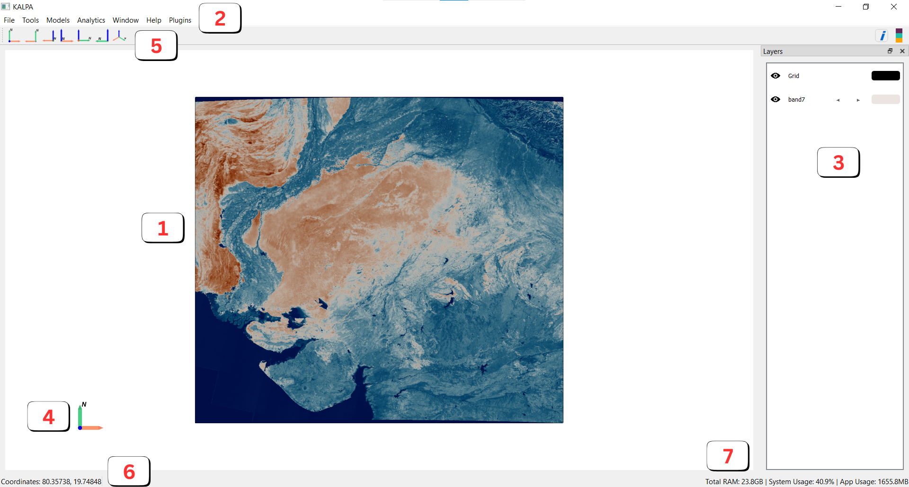

The Main Window#
Once you’ve set up the project folder, you’ll enter the Main Window, the central workspace in Kalpa.

Here’s a quick overview of its components:
Visualization Window
This is where your loaded data is displayed.
You can control the camera view by repositioning, rotating, and zooming.
Menu Bar
The menu bar provides access to various options, such as loading data, processing tools, and applying workflows.
Layer Panel
This panel lists all loaded layers, including raster data, vector data, grids, and other elements.
You can manage layer visibility, access layer properties, and organize layers here.
Axes Tool
This interactive tool shows the current orientation of the camera and allows you to adjust it directly.
Tool Bar
Quickly change the camera’s position along different axes using the toolbar.
Coordinates Display
Displays the current coordinates of the mouse pointer in the active projection. Visualise legend layer legends.
RAM Utilization Panel
Provides a live view of the total, system, and application RAM usage, helping you monitor resource consumption.
By now, you should have a good understanding of Kalpa’s starting and main windows. In the next chapter, we’ll dive deeper into loading data and configuring layers for visualization.